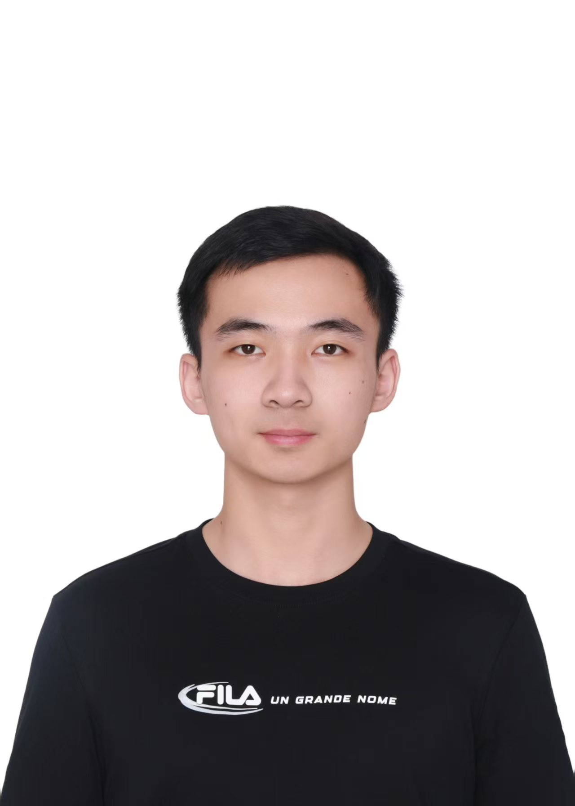
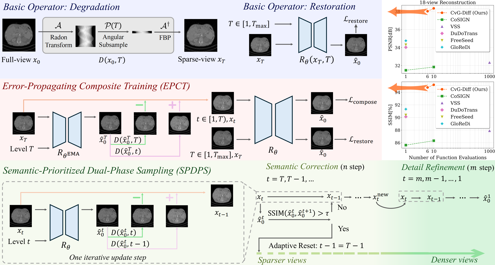
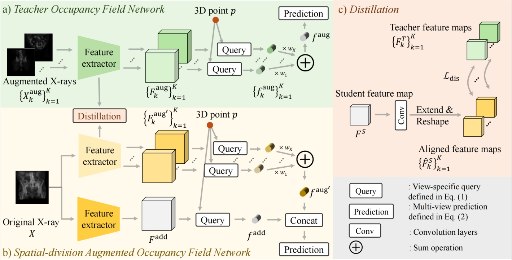
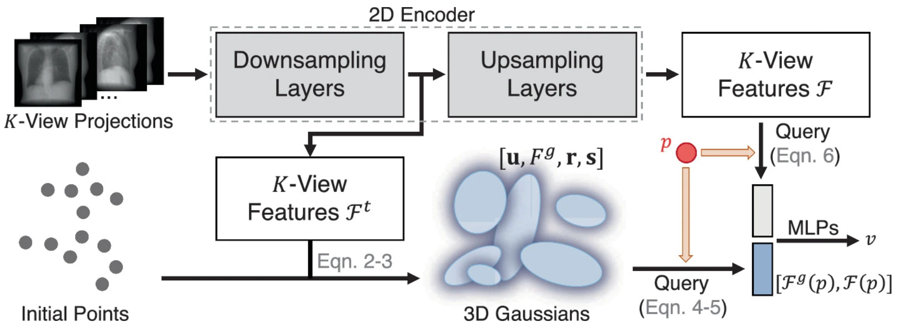
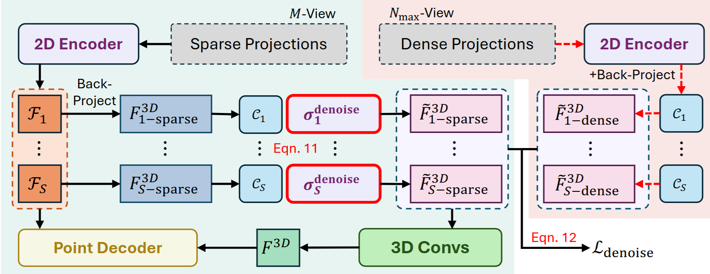
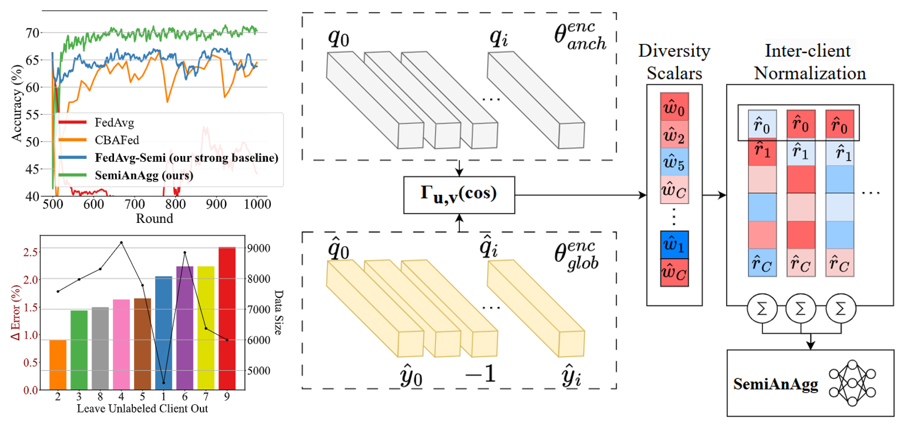
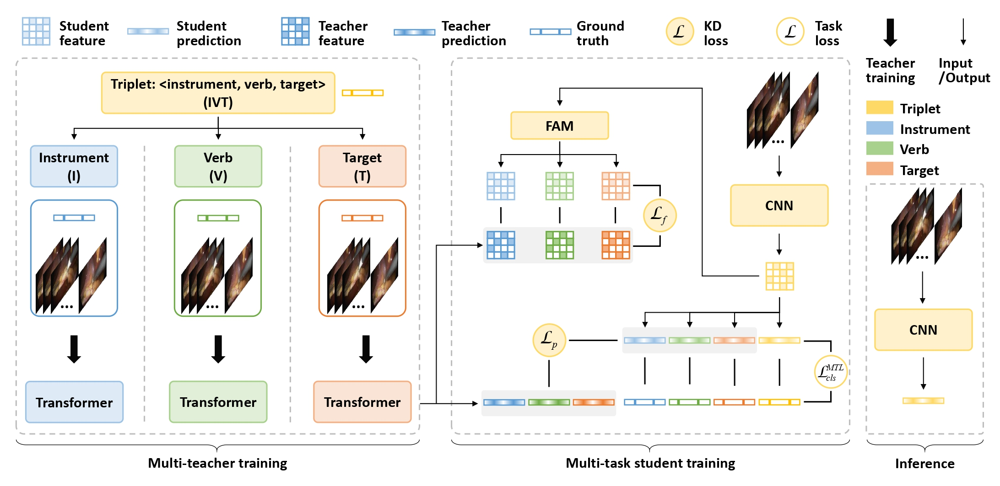

Jixiang (Jimmy) Chen🎓 Phd Candidate
The Hong Kong University of Science and Technology
|
 |


Biography
Hi! I am a third-year Phd student of ECE at The Hong Kong University of Science and Technology (HKUST), under the supervision of Prof. Xiaomeng Li. I obtained my B.Eng in School and System Design and Intelligent Manufacturing at Southern University of Science and Technology in 2023.
My research interests lie in the intersection of Computer Vision and Health Care. From 2023, I started to do some research on 3D Reconstruction of CT and orthopaedic applications. Now, I focus on designing novel applications towards clinically-relevant as-low-as-reasonable-possible (ALARP) health care solutions in radiology and orthopaedic applications.
Feel free to contact me if you are interested in discussing or collaborating with me.
Education
|
The Hong Kong University of Science and Technology, Hong Kong PhD Candidate in LI Lab, HKUST Advisor: Prof. Xiaomeng Li Sep. 2023 - Present |
Southern University of Science and Technology, Shenzhen, China Bachelor of Engineering in School and System Design and Intelligent Manufacturing Intern in Computational Intelligence and Advanced Manufacturing Group Advisor: Prof. Zhenkun Wang Sep. 2019 - Jun. 2023 |
Publications
|  |
Cross-view Generalized Diffusion Model for Sparse-view CT Reconstruction Jixiang Chen, Yiqun Lin, Yi Qin, Hualiang Wang, Xiaomeng Li Medical Image Computing and Computer-Assisted Intervention (MICCAI). 2025(Spotlight Presentation, Acceptance Rate: 3.48%) |
|  |
Spatial-division augmented occupancy field for bone shape reconstruction from biplanar x-rays Jixiang Chen, Yiqun Lin, Haoran Sun, Xiaomeng Li Medical Image Computing and Computer-Assisted Intervention (MICCAI). 2024 |
|  |
Learning 3d gaussians for extremely sparse-view cone-beam ct reconstruction Yiqun Lin, Hualiang Wang, Jixiang Chen, Xiaomeng Li Medical Image Computing and Computer-Assisted Intervention (MICCAI). 2024 |
|  |
Deepsparse: A foundation model for sparse-view cbct reconstruction Yiqun Lin, Hualiang Wang, Jixiang Chen, Jiewen Yang, Jiarong Guo, Xiaomeng Li Submitted to IEEE Transactions on Medical Imaging. Under Review.[paper] |
|  |
Learning Unlabeled Clients Divergence via Anchor Model Aggregation for Federated Semi-supervised Learning Marawan Elbatel, Hualiang Wang, Jixiang Chen, Hao Wang, Xiaomeng Li Transactions on Machine Learning Research. 2024[paper] |
|  |
Mt4mtl-kd: A multi-teacher knowledge distillation framework for triplet recognition Shuangchun Gui, Zhenkun Wang, Jixiang Chen, Xun Zhou, Chen Zhang, Yi Cao IEEE Transactions on Medical Imaging. 2023 |
Honors & Awards
| [08/2025] HKUST RedBird Academic Excellence Award for Continuing PhD Students. |
| [08/2023] HKUST RedBird PhD Recruitment Award. |
| [07/2023] Honored Thesis - Design and Research of Deep Learning Methods for Surgical Skill Assessment. |
| [07/2023] Honored Graduate of Southern University of Science and Technology. |
| [09/2022] Southern University of Science and Technology Scholarship for Academic Excellence. |
| [09/2019] Southern University of Science and Technology Freshmen Scholarship. |